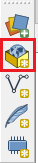
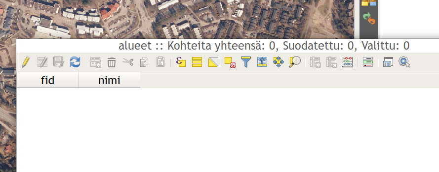
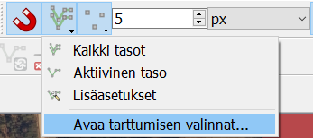
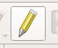
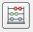
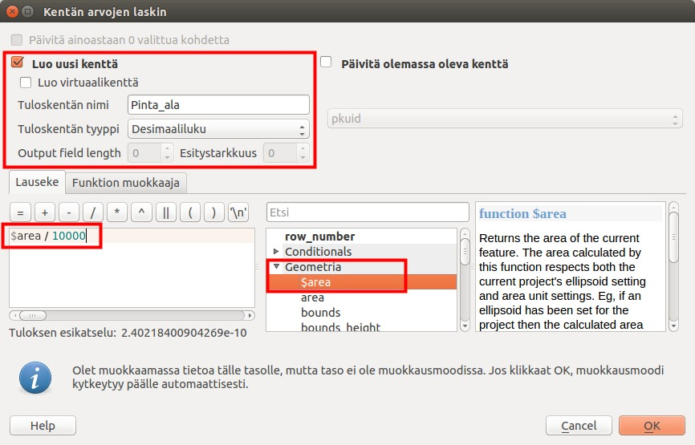
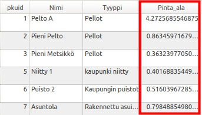

7 Harjoitus 6: Paikkatietoaineiston editointi
7.1 Harjoituksen sisältö
Harjoituksessa digitoidaan uusi vektorimuotoinen paikkatietoaineisto.
7.2 Harjoituksen tavoite
Opiskelija oppii kuinka paikkatietoaineistoja tuotetaan ja editoidaan.
7.3 Valmistautuminen
Luo uusi QGIS-projekti ja tallenna se nimellä (Projekti → Tallenna nimellä…) “QGIS_harjoitus_6”.
7.4 Vektoriaineiston (GeoPackage) luominen
Luodaan uusi GeoPackage-aineisto valitsemalla työkalupalkista Uusi GeoPackage-taso…

Tee alla näkyvät valinnat GeoPackage-ikkunaan. Muista nimetä aineisto sopivalla tavalla (tässä esim. alueet), valitse Geometriatyyppi-kohtaan MultiPolygoni ja valitse koordinaattijärjestelmäksi ETRS89 / TM35FIN(E,N) EPSG:3067. Lisää lopuksi Nimi-attribuutti Lisää ominaisuustietolistaan -toiminnolla. Paina OK.

Avaa juuri luomasi tason attribuuttitaulukko ja tarkista, että se on tyhjä. Tarkista myös, että määrittelemäsi kentät näkyvät sarakkeina.

Fid-kenttä muodostuu automaattisesti ja Nimi-kentän loimme itse äskeisessä määrittelyikkunassa.
7.5 Pohjakartan lisääminen
Voit käyttää digitoinnin pohjana Maanmittauslaitoksen ilmakuvia. Lisää nyt ortoilmakuva L4131F.jp2-rasteritiedosto kansiosta …/Harjoitus 6/L4131F QGISiin. Muista, että myös rasteriaineistot saat käyttöösi helposti raahaamalla tiedoston karttaikkunaan tai Tasot-paneeliin.

7.6 Digitoinnin aloittaminen
Valitse kartalta mieleisesi alue, jota lähdet digitoimaan. Zoomaa tarpeeksi lähelle, jotta erotat digitoitavat alueet hyvin (esim. rakennukset).

Tarttumisen työkalut - työkalupalkin saa kiinnitettyä käyttöliittymään (ellei se jo siinä ole) joko… 1 … painamalla QGISin käyttöliittymän reunoilla hiiren oikealla ja rastittamalla Työkalut-kohdan alta Tarttumisen työkalut tai sitten 2 … avaamalla erillisen ikkunan tarttumisen asetuksille ylämenusta Työkalut → Tarttumisen työkalut. Aktivoi itse työkalu käyttöösi työkalupakistasi löytyvästä punaisesta magneetti-ikonista ja aseta sen asetukset seuraavasti.

Asetuksissa määritetään tarttumiseen käytettävä yksikkö (metri) ja etäisyys (5 metriä). Lisäksi asetetaan tarttumisen kohdistuvan aktiiviseen tasoon, sen taitepisteisiin ja/tai segmentteihin sekä myös Topologinen muokkaus ja Tarttuminen risteyksessä (Snapping on intersection).

Klikkaa seuraavaksi Lisää monikulmiokohde -työkalua  ja aloita digitointi.
ja aloita digitointi.
Muista, että voit muokata Tarttumisen asetuksia palaamalla yllä kuvattuun ikkunaan ja jättämällä se ikkunan sivuun muokataksesi asetuksia nopeasti. Digitoi nyt 5-8 polygonia. Kun olet valmis, klikkaa jälleen kynä-ikonia lopettaaksesi ja tallentaaksesi editoinnin.

Päällekkäisten kohteiden syntymisen voi myös välttää alla olevan animaation tavalla.

Tämän saavuttaaksesi voit aktivoida Vältä leikkauksia -valinnan päälle Avaa tarttumisen asetukset… -valikosta. Avaa ensin Tarttumisen työkalut -paneelista Avaa tarttumisen asetukset.

Näin sinulle aukeaa alla olevan mukainen tarttumisen asetukset määrittelyikkuna, jossa voit tehdä määrityksiä muun muassa leikkausten suhteen. Leikkauksilla viitataan tässä kohteiden niin sanottuihin intersektioihin.

Psst! Muista tallentaa QGIS-projekti harjoituksen lopuksi.
7.7 Lisätehtävä: CAD-digitointi
Voit kokeilla myös CAD-pohjaista digitointia, joka on kehittynyt verrattain paljon QGISin uudessa versiossa. Työkalut saat esiin lisäämällä Digitoinnin lisätyökalut -ylämenusta Näytä → Työkalut → Digitoinnin lisätyökalut. Kokeile erilaisia työkaluja, esimerkiksi Täytä piiri -työkalua. Tätä voit hyödyntää esimerkkitapauksena peltoja digitoidessa. Kuvitellaan, että peltojen sisään jää aina välillä pieniä metsäsaarekkeita, jotka olisi digitoitava

metsä-kohteiksi. Täytä piiri -työkalulla pystyt irrottamaan alueen omaksi objektiksi (ks. kuva alla).

7.8 Lisätehtävä: ominaisuustietojen lisääminen
Seuraavaksi laskemme pinta-alan ominaisuustietoja edellä muodostettuun paikkatietoaineistoon. Avaa Alueet-tason ominaisuustietotaulu (attribuuttitaulu).

Laita muokkaustila taas päälle kynäikonista ja muokkaa muutamaa Nimi-kentän alueen nimeä samalla tavalla kun tekisit laskentataulussa (tuplaklikkaamalla). Huomaa, että muokkaaminen on mahdollista vain jos muokkaustila on päällä. Avaa nyt Kentän arvojen laskin -työkalu seuraavan pikakuvakkeen avulla: 
Tällä toiminnolla voimme luoda uusia tai päivittää jo olemassa olevia ominaisuustietotaulun kenttiä. Pinta-alan laskentaa varten muunnetaan neliömetrit neliökilmetreiksi jakamalla pinta-ala 1 000 000:lla. Kirjoitetaan Lauseke-kenttään kaava $area / 1000000.

Painamalla OK saat laskettua kunkin alueen pinta-alan omaan kenttäänsä:
